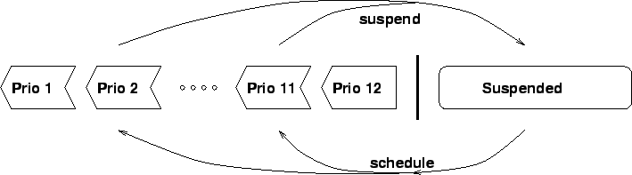

Next: Suspending Built-Ins and the
Up: Advanced Control Features
Previous: Introduction
Index
Subsections
The Structured Resolvent
The term resolvent originates from Logic Programming.
It is the set of all goals that need to be satisfied.
The computation typically starts with a resolvent consisting only of the top-level goal
(the initial query).
This then gets successively transformed (by substituting goals that
match a clause head with an instance of the clause body, ie. a
sequence of sub-goals),
and eventually terminates with one of the trivial goals
true or fail.
For example, given the program
p :- q, r. % clause 1
q :- true. % clause 2
r :- q. % clause 3
and the goal p, the resolvent goes through the following states
before the goal is proven (by reduction to true) and the computation terminates:
p --1--> (q,r) --2--> (true,r) ----> (r) --3--> (q) --2--> true
While in Prolog the resolvent is always processed from left to right
like in this example,
the resolvent in ECLiPSe is more structured, and can be manipulated
in a much more flexible way.
This is achieved by two basic mechanisms, suspension
and priorities.
Suspended goals form the part of the resolvent which is
currently not being considered. This is typically done when we
know that we cannot currently infer any interesting information from them.
The remaining goals are ordered according to their priority.
At any time, the system attempts to solve the most urgent subgoal first.
ECLiPSe currently supports a fixed range of 12 different priorities,
priority 1 being the most urgent and 12 the least urgent.
Figure 17.1 shows the structure of the resolvent.
When a toplevel goal is launched, it has priority 12 and is the only
member of the resolvent. As execution proceeds, active goals may be
suspended, and suspended goals may be woken and scheduled with a
particular priority.
Figure 17.1:
Structure of the resolvent
|
 |
Floundering
The case that a subgoal remains suspended (delayed) at the end of the computation
is sometimes referred to as floundering.
When floundering occurs, it means that the resolvent could not be reduced
to true or fail, and that the answer bindings that have been found
are valid only under the assumption that the remaining delayed goals
are in fact true. Since such a conditional answer is normally not
satisfactory (even though it may be correct), it is then necessary to change
the control aspect of the program. The solution would usually be to either
make further variable instantiations or to change control annotations.
The aim is to get the delayed goals out of the suspended state and
into the scheduled state, where they will eventually be executed and reduced.
As a rule of thumb, goals will not suspend when all their arguments are
fully instantiated. Therefore, a program that makes sure that all its
variables are instantiated at the end of computation will typically not
suffer from floundering.
Next: Suspending Built-Ins and the
Up: Advanced Control Features
Previous: Introduction
Index
Warwick Harvey
2005-01-25